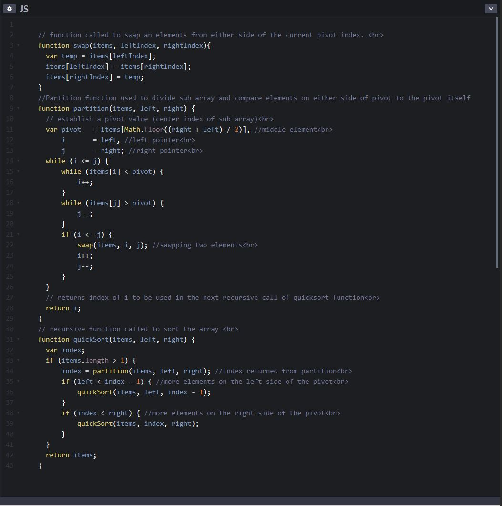

The quick sort algorithm is a recursive algorithm that uses a divide and conquer technique. Quick sorts worst case time complexity is O(n^2), but its average case time complexity is o(nlog2n).
The first step is to divide the sub array (initially arr[0 .. n-1]) by choosing a pivot (center element of sub array). We will then move all the elements so that any element smaller than the pivot is moved to the left sub array, and all the elements larger then the pivot are moved to to right.
We then recursively call the quicksort function to perform this task on the two sub arrays we have just formed, and so on. The effect of which is that the algorithm will only stop once all elements are sorted in the final array.
